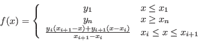
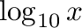

Next: Variables Up: Reference Previous: Correlation coefficient
 A switch block (also known as a case block, or select in the Fortran world) is a way of selecting from a range of alternatives according to the value of the input, effectively defining a piecewise function.
The default switch has two cases, and can be used to implement an if/then/else construct. However, because the two cases are 0 and 1, or false and true, a two case switch statement will naturally appear “upside down” to how you might think of an if statement. In other words, it looks like:

You can add or remove cases through the context menu.